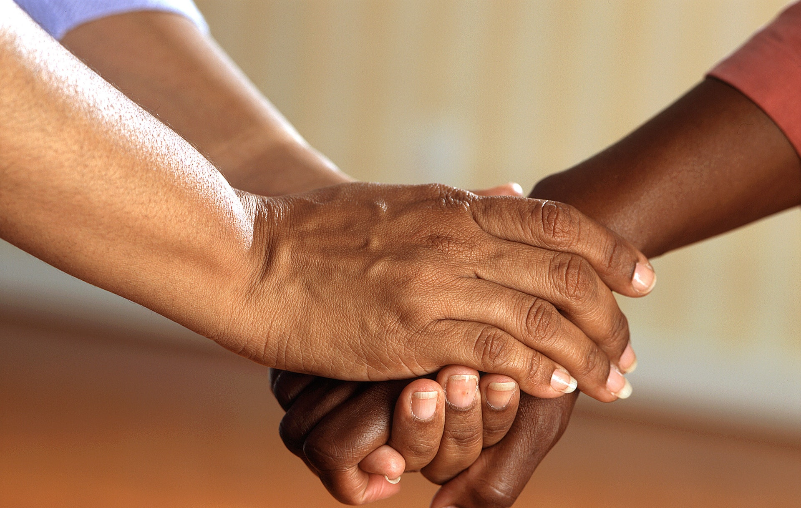
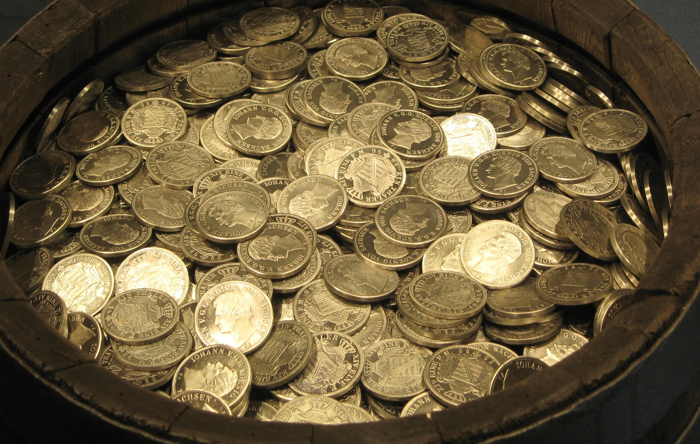

Volunteer
Are you a professional therapist, a counsellor, a health care professional or an activist?
Are you willing to dedicate your time and knowledge to helping victims talk through their pains
and educating females during events on how to avoid abuse and to seek help after an assualt?
Are you willing to get justice for these ladies?
If you have answered yes to any of this questions please click the button below.
Donate
Cocoon of hope is a non-profit organisation, your donations will help in providing survivors of abuse with
legal representatives, medication, shelther, food, counselling etc.
Donations will also be used in organising sensitisation programs in schools, religious organisations,
rural/underpreviledged societies and in funding this organisation.
Your support will go a long way in protection and defending defenceless ladies.
Hope for survivors

The sexual abuse was not your fault, do not let anyone tell you otherwise.
This incident does not define you and it does not change the fact that you are
an amazing person who is loved and worthy to be loved. Chat with us to get resources to help you through
this experience and to get connected with a therapist.
You are a strong and amazing woman.